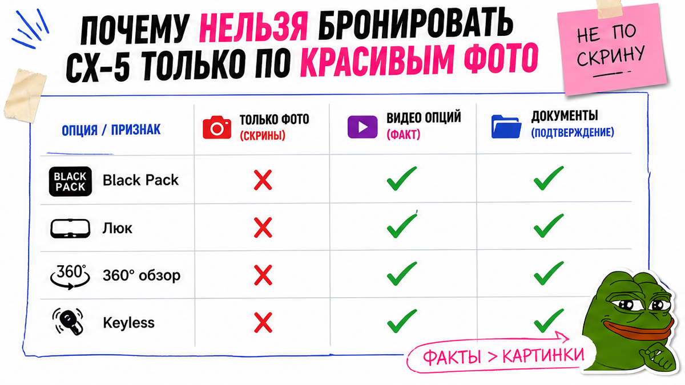
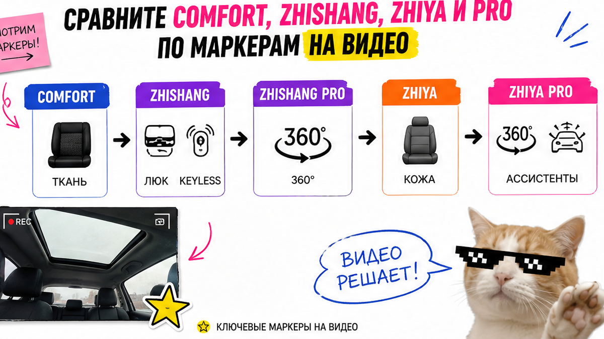
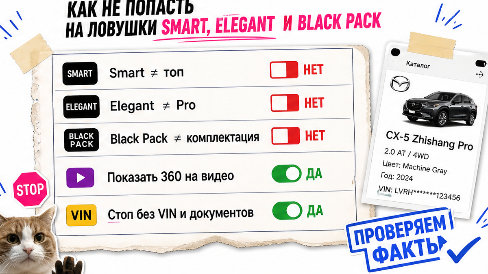

Увидели объявление "Mazda CX-5 максималка Black Pack, всё есть", перевели бронь по скрину салона – а потом выяснилось, что это Comfort в чёрном исполнении без люка, без камер 360 и без бесключевого доступа. Типичная боль новичка: депозит уже ушёл, откатить неудобно, а чем Zhishang отличается от Zhiya или Pro – так и не понятно. Ниже – рабочий путь: сравнить 2–3 лота по китайскому имени версии, опциям на видео и VIN, и не платить, пока всё не сошлось.
TL;DR / Быстрый инсайт: Китайскую CX-5 выбирайте не по русскому слову "максималка", а по исходному названию версии (舒适型 / 智尚型 / 智雅型 и Pro) плюс списку опций на непрерывном видео. Zhiya/Elegant дороже по ценнику часто не значит "все ассистенты Pro". VIN подтверждает машину, но не заменяет заводскую карточку. Если хоть один пункт чеклиста красный – депозит отложите.
В 2026 кроссоверы из Китая ищут часто: свежий левый руль и понятный мотор 2.0.
Проблема не в том, что модель "плохая", а в подмене ожиданий до денег. На практике продавец пишет Smart или Elegant, покупатель слышит "почти топ", а в салоне нет 360 или адаптивного круиза. Ориентир простой: сначала факты по конкретной машине, потом расчёт и бронь – без статичного "калькулятора утиля" в голове и без веры красивому ценнику из чата.

Фото хорошо продают свет и ракурс. Они плохо доказывают комплектацию. Например, чёрные диски и зеркала выглядят как дорогая версия, но Black Pack сам по себе не поднимает Comfort до Pro. Не делайте ставку на красивый скрин: требуйте исходное китайское имя версии из документов и видео, где спорные опции включают при вас.
Читательская история почти всегда одна и та же: "в чате сказали максималка", депозит ушёл, а после сверки вылезла база. Избегайте перевода денег, пока не совпали три слоя: название версии, опции на видео и VIN/карточка. Если посредник давит "только сегодня без таблички" – это стоп-сигнал, а не скидка.

Для China-spec 2.0 6AT 2WD в разборах 2026 чаще встречаются пять ступеней. Выберите нужную не по цене объявления, а по 3–4 признакам на видео. Сделайте короткую таблицу must-have до просмотра лотов: без чего машина "не ваша".
| Версия (кит. / часто пишут) | Что обычно видно новичку | Кому подходит | Стоп-сигнал |
|---|---|---|---|
| Comfort / 舒适型 | Ткань, ручная регулировка кресла, задняя камера, без keyless и люка | Кто берёт базу и закладывает дооснащение | В объявлении "максималка", а на видео нет люка/keyless |
| Zhishang / Smart / 智尚型 | Люк, keyless, передние датчики, обычный круиз, салон ещё тканевый | Кому важны датчики и доступ без ключа, кожа не критична | Обещают 360 и кожу "как в Pro" |
| Zhishang Pro | Камеры 360 и пакет ассистентов при относительно простом салоне | Кто паркуется в городе и ценит L2/ACC выше кожи | На видео нет кругового обзора или раздела ассистентов |
| Zhiya / Elegant / 智雅型 | Кожа, электрорегулировка/память, подогрев сидений, электробагажник | Кому важен комфорт салона, а не полный Pro-пакет | Покупают "как топ по ассистентам" только из-за цены выше |
| Zhiya Pro | Комфорт Zhiya плюс 360 и ассистенты Pro | Кто хочет и салон, и камеры/круизный пакет | Нет крупного блока (360 или электробагажник) при заявленном Pro |
Итоговый вердикт: Не сравнивайте лоты по русскому ярлыку из чата. Сверьте китайское имя и маркеры на видео. Типичная ошибка – взять Zhiya "потому что дороже", а потом искать 360, которого в этой версии может не быть.
Отдельно: на официальной странице Changan Mazda рядом с 2.0 встречаются и другие китайские ярлыки, плюс варианты 2.5/AWD. Используйте карточку конкретной машины, а не "привычное" название из чужого обзора. Год в заголовке объявления тоже бывает маркетинговым: смотрите дату выпуска в документах.

Перевод ломает смысл. Smart часто = Zhishang, Elegant = Zhiya, но продавцы любят писать красивее. Дороже по ценнику Zhiya не равно "богаче по ассистентам", чем Zhishang Pro. На практике тканевый Pro с 360 может быть полезнее кожи без кругового обзора – если вам важна парковка.
Black Pack – визуальный пакет, а не доказательство топовой ступени. Не делайте вывод "раз чёрная – значит Pro". Добавьте в запрос продавцу: покажите на видео 360 по кругу, электробагажник, раздел круиза/ассистентов и бесключевой доступ. Нет показа – нет депозита.
VIN (17 символов на табличке) отвечает на вопрос "это та же машина?". Он не обязан показать русское имя комплектации и полный список опций. Поэтому одного скрина "VIN пробился как CX-5" мало. Проверьте совпадение символов в видео, переписке и счёте; при расхождении хотя бы одного знака – стоп.
Дальше запросите заводскую или дилерскую карточку на тот же VIN и сверьте год, цвет, мотор 2.0/6AT/2WD и оборудование с объявлением. Если авто ещё в КНР, российские базы могут быть пустыми – это нормально; китайский отчёт всё равно полезен. Подробный workflow по VIN – в гайде как проверить авто из Китая по VIN до депозита.
Workflow до денег:
Must-have опции → китайское имя версии → непрерывное видео опций → VIN с таблички → заводская карточка → отчёт → депозит или стоп
Пройдите список письменно. Результат простой: либо все пункты зелёные и вы можете бронировать, либо депозит откладываете. Уберите из сделки давление "надо решить за час".
Критерий успеха: у вас есть короткий чеклист из 10 пунктов; по двум–трём лотам совпали китайское имя версии, опции на видео и VIN/карточка; при любом "не сходится" деньги не уходят. Так вы сможете сегодня сравнить объявления без команды "технарей" и спокойно сказать "нет" красивой, но пустой "максималке".
Китайская CX-5 для РФ чаще интересна как свежий LHD; японская – часто RHD б/у с другим зимним пакетом. Универсального "всегда лучше" нет: сравнивайте два конкретных VIN. Зимние опции у China-spec проверяйте отдельно. Русификацию штатной мультимедиа закладывайте после прихода; китайские online-сервисы в РФ обычно бесполезны, CarPlay смотрите по фото экрана.
Готовые суммы пошлин и "под ключ от …" сюда не выносим: цифры плывут. Актуальный расчёт – в каталоге avto-sales125.ru. Разбор конкретного VIN – в Telegram avtosales125.
Материал проверен: Редакция Авто-Сейлс (эксперты по авто под заказ из Японии, Кореи и Китая).
Достоверность: факты сверены с официальной страницей Changan Mazda CX-5 (спеки 2.0/6AT), разборами AZWAY и avto-exp, community Drive2 по пяти комплектациям; актуальные расчёты заказа – в каталоге, не в статичном прайсе статьи.
Сделайте сверку по маркерам: у Comfort обычно нет люка и keyless, у Zhishang они появляются вместе с передними датчиками и обычным круизом. Если в объявлении Comfort, а продают как "почти Smart со всем" – запросите видео и карточку до депозита.
Не всегда. Выберите Zhiya Pro, если хотите и кожаный комфорт, и 360/ассистенты. Если важнее парковка, а кожа вторична, на практике хватает Zhishang Pro. Сверьте must-have список, а не ценник.
Русификацию штатной системы закладывайте после прихода авто; до депозита полезно фото раздела "О системе". Китайские connected-сервисы в РФ обычно не работают "из коробки" – не стройте ожидания на них.
Китайская версия чаще идёт как новый или свежий LHD 2.0 FWD. Японская – часто RHD с пробегом и другим зимним пакетом. Сравните два VIN под ваш сценарий, а не "страну вообще".
Нет. VIN подтверждает идентичность, но не полный список опций. Проверьте заводскую карточку на тот же номер и видео спорных функций. Расхождение – повод отложить оплату.
Избегайте депозита. Попросите непрерывное видео с VIN и включением опций. Если ответа нет – переходите к другому лоту или уточняйте через менеджера в Telegram.